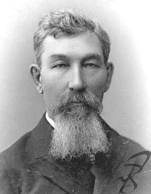
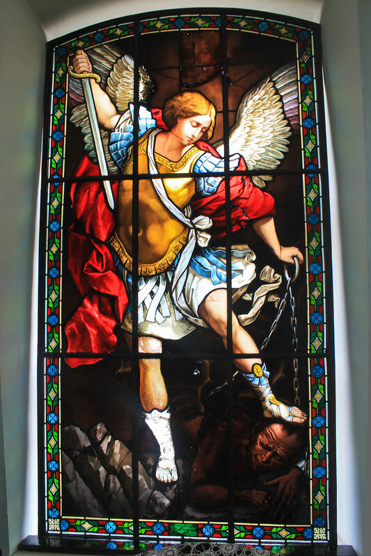
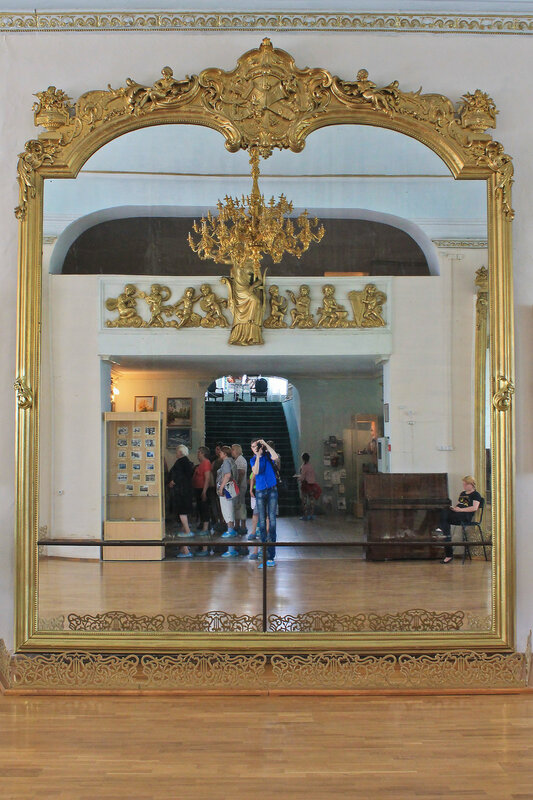
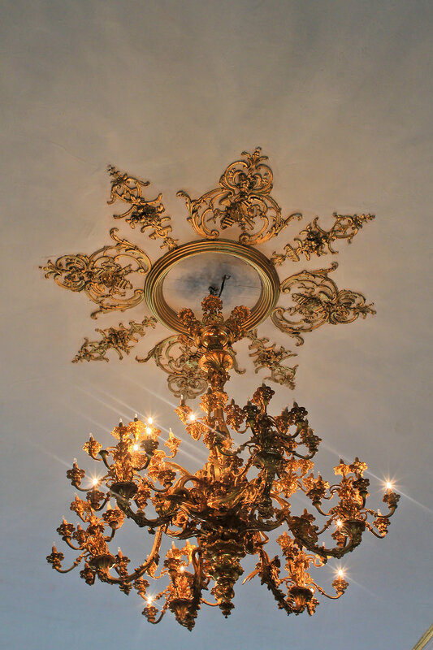

Нерчинский краеведческий музей основан в 1886 году и является старейшим музеем Забайкалья. До 2003 года располагался в здании Нерчинского Воскресенского собора, с 2003 года находится в отреставрированном Дворце купца и золотопромышленника М.Д. Бутина. Здесь расположены уникальные Венецианские зеркала, купленные Бутиным в 1878 году на Всемирной выставке в Париже и до сих пор считающиеся самыми большими зеркалами в мире (до 16 кв.м.). собрание музея насчитывает свыше 20000 единиц хранения по истории и природе Забайкалья.

Михаил Дмиитриевич Бутин - купец 1-й гильдии, золотопромышленник, меценат, коммерции советник, потомственный почётный гражданин.
Главные экпонаты
«Архангел Михаил поражает дьявола»

Уникальный витраж, изготовленный в середине XIX века в Мюнхене
Венецианское зеркало

Самое большое интерьерное зеркало в мире. Размер цельного полотна составляет 4х4 метра
Люстра в зеркальном зале

Огромная 370 килограммовая люстра, рассчитаная на 96 свечей